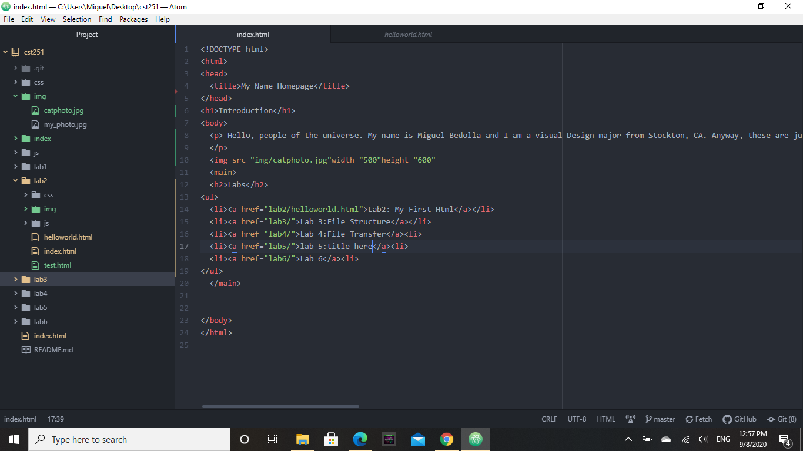
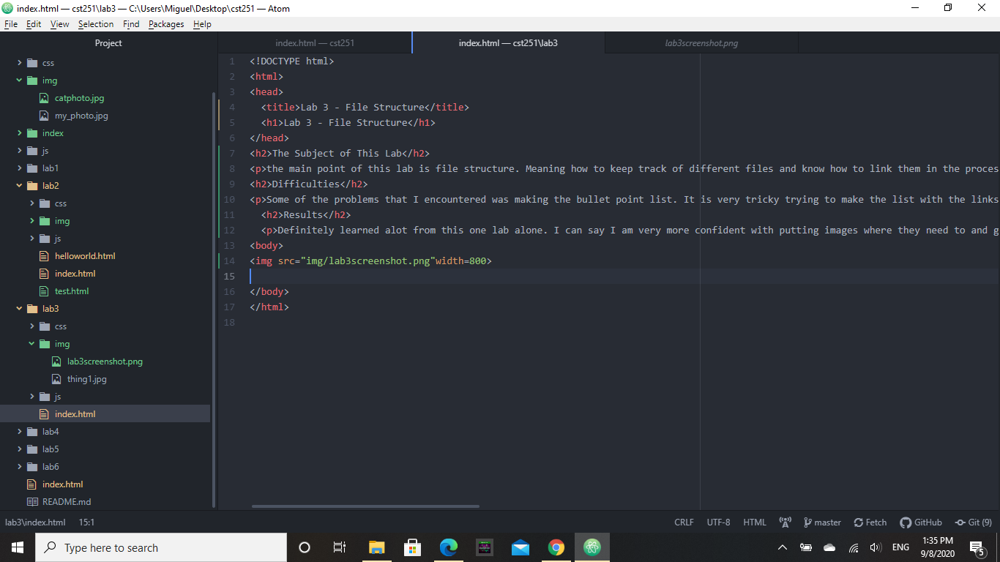
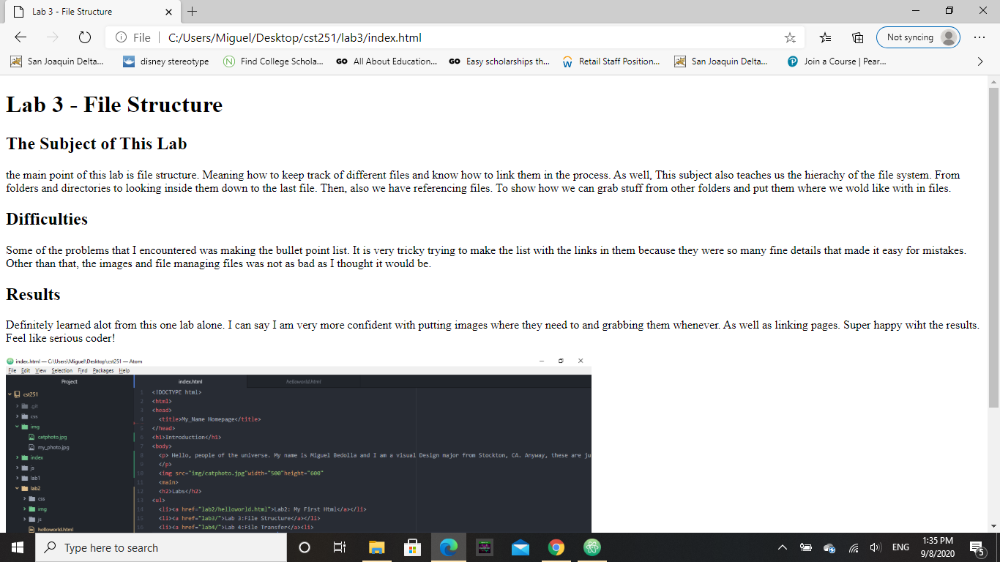

the main point of this lab is file structure. Meaning how to keep track of different files and know how to link them in the process. As well, This subject also teaches us the hierachy of the file system. From folders and directories to looking inside them down to the last file. Then, also we have referencing files. To show how we can grab stuff from other folders and put them where we wold like with in files.
Some of the problems that I encountered was making the bullet point list. It is very tricky trying to make the list with the links in them because they were so many fine details that made it easy for mistakes. Other than that, the images and file managing files was not as bad as I thought it would be.
Definitely learned alot from this one lab alone. I can say I am very more confident with putting images where they need to and grabbing them whenever. As well as linking pages. Super happy wiht the results. Feel like serious coder!
 Cst251 Main Index Screenshot  Lab 3 screenshot  Lab 3 Web Browser